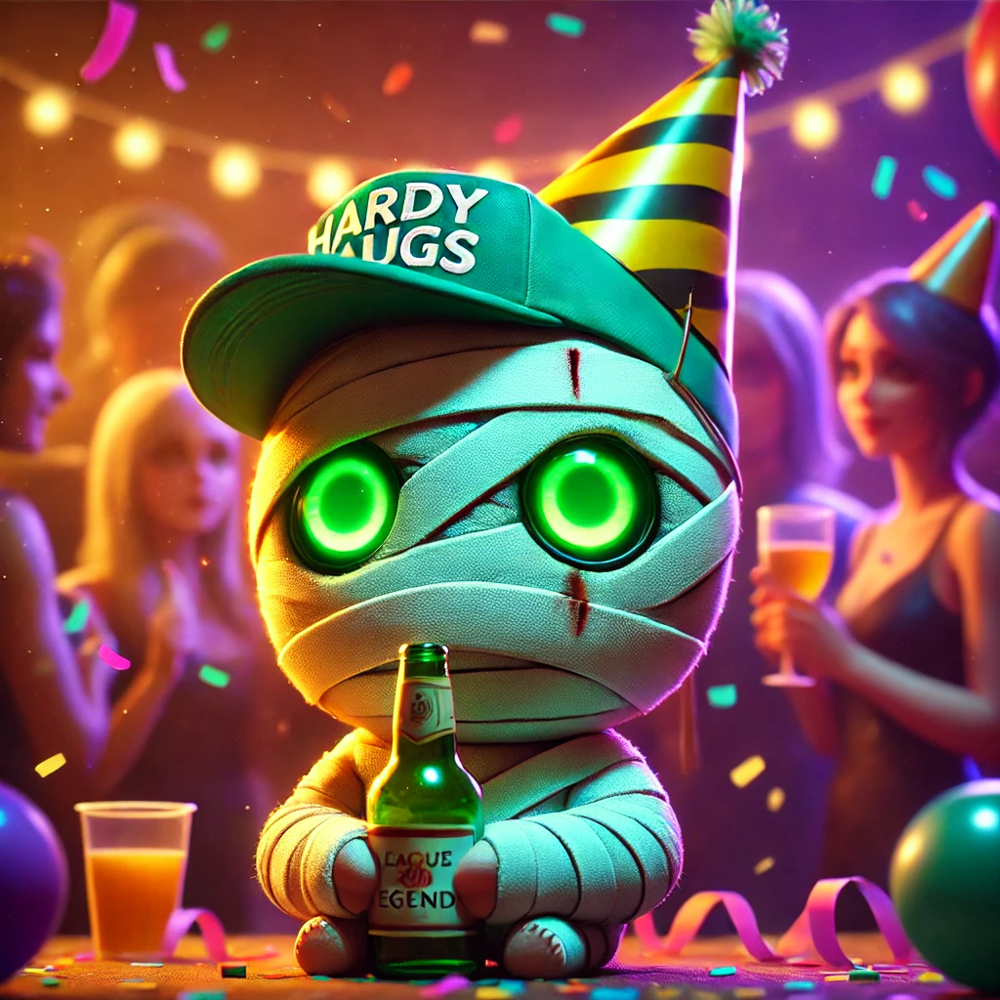

Si hablamos de League of Legends, hablamos de grandes nombres: Faker, Uzi, Doinb… pero ninguno se acerca a la magnitud de HardyaUgS, el jungla definitivo. No porque sea el mejor, sino porque logra redefinir constantemente el significado de "gameplay cuestionable".
Un Estilo de Juego Inigualable
La jungla es un ecosistema hostil, donde solo los más astutos sobreviven. Y luego está HardyaUgS, quien ha demostrado que no hace falta visión de juego ni precisión mecánica para dominarla. Su Amumu, una auténtica obra de arte en cámara lenta, ha dejado boquiabiertos a miles de espectadores… la mayoría preguntándose por qué sigue maxeando la E primero en lugar de la Q.
No conforme con sus hazañas con el momia triste, también nos deleita con Warwick y Vi, dos campeones con los que ha perfeccionado una estrategia revolucionaria: ir 0/7/2 antes del minuto 10 y luego sorprender a todos con una jugada maestra... que generalmente termina en un 1v5 bajo torre enemiga.
Pathing Único y Visionario
Mientras otros junglas priorizan eficiencia y control de mapa, HardyaUgS opta por un enfoque más… artístico. Sus rutas de jungla parecen haber sido trazadas con los ojos cerrados y con el ratón en la otra habitación. Cuando se le pregunta por qué no gankea, responde con su icónica frase: "Estoy farmeando para el late", aunque la partida ya esté 2-15 en el minuto 8.
Un Control de Objetivos Magistral
No hay dragón, heraldo o barón que se resista… a ser robado por el equipo enemigo mientras HardyaUgS farmea los Krugs. Su habilidad para llegar tarde a todos los objetivos es digna de estudio. Se dice que Riot está considerando cambiar el anuncio de “Barón Nashor ha sido derrotado” por un simple "GG, HardyaUgS lo ha hecho de nuevo”.
El Compañero de Equipo Soñado
Si alguna vez has tenido el honor de compartir partida con él, sabrás que HardyaUgS tiene una mentalidad inquebrantable. Nada lo tiltea, probablemente porque ya se ha rendido por dentro desde la pantalla de carga. Su macrojuego es una caja de sorpresas: nunca sabes si va a aparecer en una teamfight crucial o si está ocupado robándole la wave a su propio midlaner.
En resumen, HardyaUgS es una fuerza de la naturaleza. No porque sea imparable, sino porque deja a su equipo atrapado en una tormenta de caos absoluto. Pero, ¿quién necesita ganar cuando puedes disfrutar del espectáculo?
Si alguna vez ves a HardyaUgS en tu equipo, recuerda: los LP van y vienen, pero la experiencia de presenciar semejante obra maestra es para siempre.